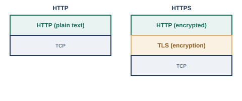

ここまでの章で見てきたIPアドレス・ポート番号・TCP/UDPは、いずれも「通信を届けるための仕組み」でした。この章で扱うのは、その届いた通信の中身として、実際にどんなやり取りが行われているか、というアプリケーション層（L7）のサービスです。
その代表格が、Webページの閲覧に使われるHTTP（HyperText Transfer Protocol）です。HTTPは、ブラウザ（クライアント）が「このページをください」というリクエストを送り、Webサーバが該当するデータをレスポンスとして返す、という単純なリクエスト・レスポンス形式で成り立っています。現行の仕様はRFC 9110としてまとめられています※1。

現行のTLSの仕様はRFC 9846としてまとめられています※2。銀行やショッピングサイトはもちろん、現在では大半のWebサイトが、通信内容を保護するためにHTTPSを使うようになっています。
なお、近年では、HTTP/3という新しいバージョンも登場しています。これまでのHTTPはTCPの上で動いていましたが、HTTP/3は、QUICと呼ばれるUDPベースの新しいトランスポートの上で動作します（RFC 9114）※3。接続確立の速度や、パケット損失時の挙動の改善が主な狙いですが、輻輳制御などの詳細な仕組みは本書の範囲を超えるため、「そういう新しい方式がある」という程度にとどめておきます。
ネットワーク機器やサーバの多くは、直接その場で操作するのではなく、離れた場所からリモートで管理・操作されます。かつては、telnetという仕組みがよく使われていましたが、telnetはユーザ名やパスワード、操作内容がすべて平文で流れてしまうため、盗聴のリスクがありました。
この問題を解決するために作られたのが、SSHです。通信内容を暗号化したうえで、リモートの機器にログインし、コマンドを実行できるようにします。RFC 4251としてプロトコルの全体構成が標準化されています※4。今日では、ルータやスイッチ、サーバへのリモートログインの手段として、SSHが事実上の標準になっており、telnetは特別な事情がない限り使われなくなっています。
ここまで見てきたHTTP/HTTPS、SSHのほかにも、日常的に使われているアプリケーション層のサービスがいくつかあります。ここでは、深入りはせず、概要だけを押さえておきましょう。
これらのサービスも、結局のところ、この章の前半で見たHTTPやSSHと同じように、決まったポート番号（メール送信なら25番や587番、FTPなら20番・21番など）を使い、決まった手順でやり取りを行う、という点では共通しています。第7章で見たポート番号とトランスポート層の知識があれば、初めて見るアプリケーション層のプロトコルに出会っても、「このプロトコルは、どのポート番号で、どんな手順のやり取りをしているのか」という視点で読み解けるようになります。